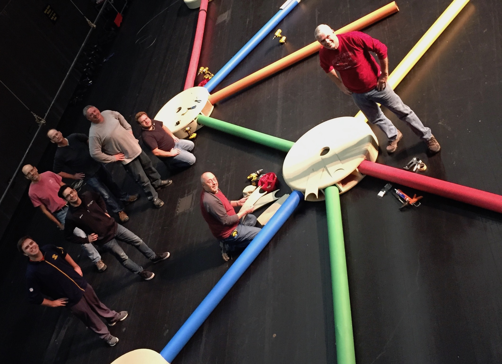
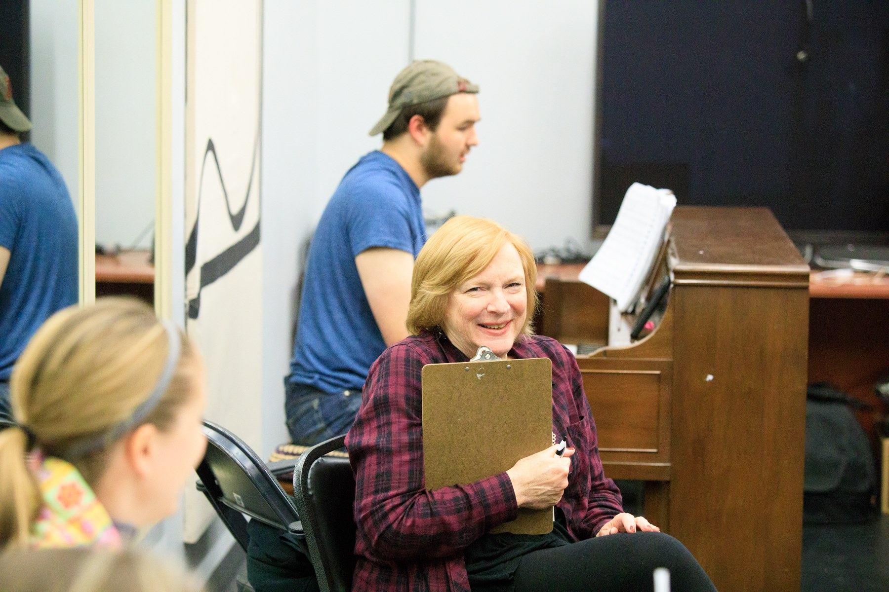
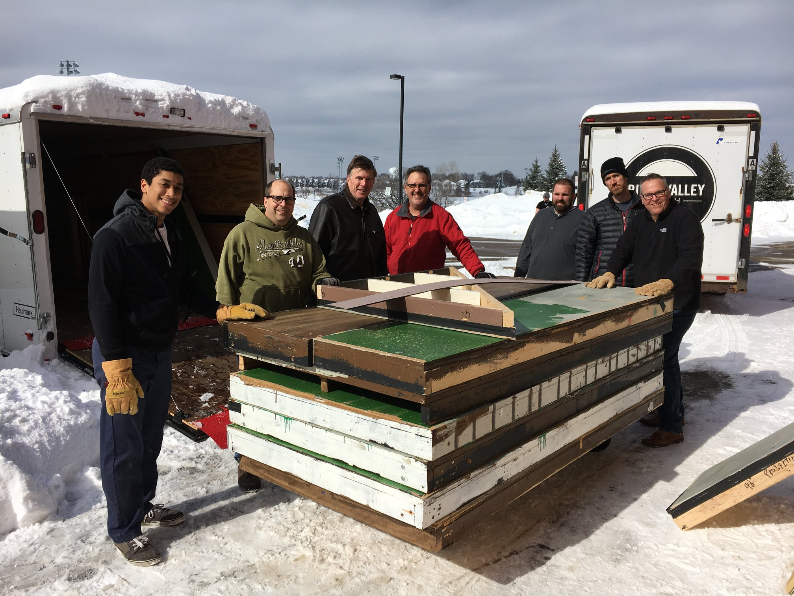

Volunteer with WCT!We depend upon our awesome volunteers for much of the work that happens at Woodbury Community Theatre. We are always looking for new volunteers and would love to get you plugged into the community. If you’re a new volunteer, join us for one of our upcoming Open Houses or fill out the Volunteer Now form to let us know how you’d like to help. There are dozens of ways to get involved, both onstage and behind the scenes. We guarantee that there is something for everyone! Volunteer Testimonial"My family has been a part of WCT for over a decade now. During that time, I've had the joy of working alongside my parents on numerous productions. WCT is a place where families can all contribute. For instance, I recently finished a production where a grandmother was running a spotlight, her daughter was working publicity, and her granddaughter was performing onstage. WCT is home to mother-daughter choreography teams, father-daughter lighting teams, and more. The list goes on and on. There is a role for everyone with WCT. I urge you and your family to come join in the fun! Upcoming Volunteer Open HousesApril 7 and August 11 from 10am—12pm |
Fill out our volunteer survey: |
|  |  |  |